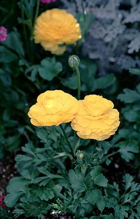

This bulbflower naturalizes well in gardens. The bulb grows best in well-drained soil high in humus. It will grow in lightly shaded forest areas and on rocky outcrops as well as in open meadows or praries. Additionally it is found growing alongside streams and rivers. The plants may be divided in autumn after the leaves have withered. Bulbs should be planted in the autumn. Additionally the plant spreads by seed rather than by runners.

With its deeply fragrant flowers -- scallop-edge bells that dangle about bright emerald-green leaves -- this nearly deer-proof shade lover appears to be delicate in an old-fashioned way. But the pretty plant is also an intrepid wanderer, spreading readily and rapidly, and anyone who gardens in a small space will want to watch this perennial to make sure it stays in bounds. Tolerates shade well. Warning: this plant is poisonous.

Crown imperials are strong-growing bulbous plants, making rapid growth in the spring, flowering during April/early May and dying down in early summer. Best in raised beds or planters. Does not tolerate shade; needs a warm, sunny position where it can be left undisturbed for many years.
This species of buttercup can get up to 2 feet tall and has large showy blooms in a variety of colors from May to June. Persian buttercups are most commonly grown from tubers planted in the beginning of spring. Each plant will procude up to 70 blooms in a season. Good for cooler weather; can tolerate light frost.

These charming little blooming plants hail from Argentina and Uruguay and form dense clumps of perennial flowers to chase the winter doldrums away. These flowers spring from tall planted bulbs. They can get up to half a foot tall with a similar spread. Each bulb will produce numberous flowering stems with slender, deeply green foilage. Blooms are fragrant and star-shaped with six blue or white pedals.

We have a wide variety of tulips in many colors. Plant tulip bulds in the fall, 6 to 8 weeks before a hard frost is expected and when soils are below 60 degrees F.